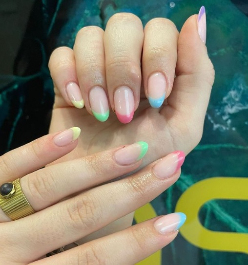
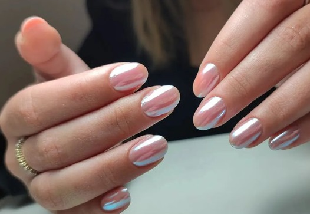
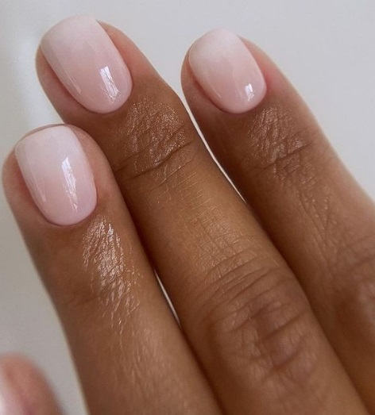
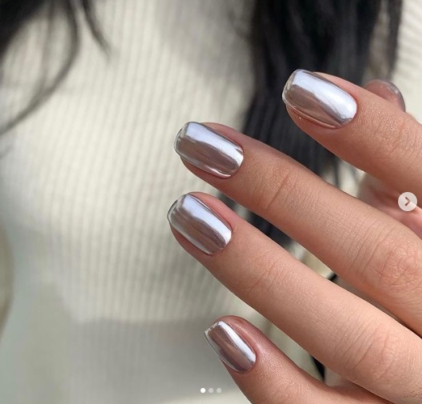
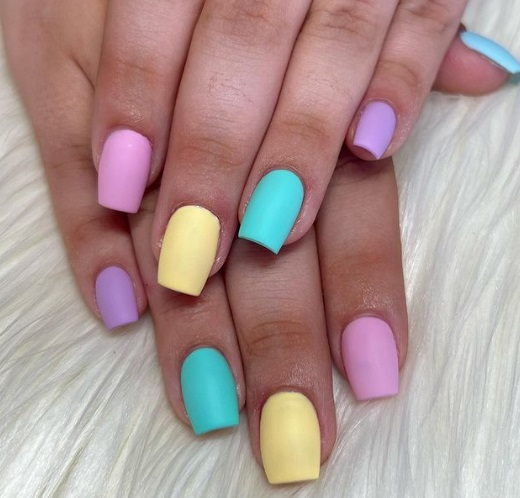

Moda 2023
Las tendencias de primavera verano 2023 representan ahora mismo lo que más nos interesa en términos estilísticos. ¿Qué prendas llevaremos estos meses? ¿Qué colores e inspiraciones serán nuestras nuevos favoritos? En líneas generales, nos encontraremos ante una temporada que no cambian demasiado. La estética dosmilera sobrevuela la esencia de la mayoría de las colecciones, con una obsesión por la desnudez, exhibida a través de las transparencias y determinadas prendas, que destaca por encima de los demás rasgos. Comenzó el invierno y salen a la luz las prendas que nos van a acompañar en la temporada 2023. Nuestros aliados serán los clásicos de siempre: tapados y trenchs en tonalidades neutras y los monos, pero también se suman nuevos, como las prendas con efecto puffer, el ecocuero y los chalecos sastreros. También el mix de texturas, tejidos y estampas pisan fuerte. De la lencería al denim desgastado o los corsés, pasando por colores como el rosa o el verde agua, aquí recopilamos algunas de las pautas principales en las que debemos fijarnos hoy.Comodines favoritos: el chaleco sastre y el mono
La sastrería cobró fuerza desde el año pasado. Este invierno se suma el chaleco a complementar el traje pantalón. Viene a realzar la inspiración masculina y a ofrecer una formalidad relajada. En diversos modelos, el chaleco se destina como un básico para todos los días. Combinado con zapatos formales como stilettos o balerinas o un calzado más urbano como zapatillas o borceguíes, logró acaparar todas las vidrieras. Por su parte, el mono se convirtió en una prenda imbatible. En negro y nude, con infinidad de combinaciones y usos, se consagra como la pieza fetiche de los meses que vienen.Abrigos: tapado, trench y puffer
El tapado es un imprescindible para las bajas temperaturas. Los tonos más usados son camel, gris, beige y negro. También se usarán en colores como verde, naranja, fucsia, entre otros. El largo es hasta los pies o 3 ⁄ 4. Es una prenda elegante que permite jugar con diferentes looks todos los días. Otra opción de abrigo es el trench, una prenda clásica que nunca pasa de moda. Desde su creación hace más de 100 años, se ha convertido en una prenda que ha resistido el paso del tiempo. Hoy en día, es más que versátil y se adapta a distintas ocasiones y estilos. Se puede usar tanto en outfits formales como informales, y combina perfectamente con jeans, vestidos o pantalones de vestir. Además, se ha reinventado a lo largo del tiempo para adaptarse a las tendencias actuales. En la actualidad, podemos encontrarlos en diversos colores y materiales, desde los clásicos beige y negro hasta colores más atrevidos como el rojo o el verde. Nunca pasa de moda gracias a su versatilidad y elegancia atemporal.Colores
Los colores de moda son, tal vez, la tendencia más atractiva cada temporada. Son fáciles de identificar y aplicar, y como si se tratara de una insignia, son portados con gran orgullo. En Primavera-Verano 2023 aparecen determinadas tonalidades que se repiten sin cesar, basta con recordar la las temporadas de las estaciones estivales anteriores, donde el rosa fue absoluto. Valentino, Versace, Chanel y Balenciaga lo convirtieron en un hito del nuevo milenio. Una paleta optimista, vibrante y arriesgada se tomó por completo las temporadas pasadas, sin embargo, para la futura estación, la calma, el minimalismo y las colores que dominan el paisaje, como los pasteles, serán la base de la estética primaveral. Durante las pasarelas Primavera-Verano 2023, directores creativos acentuaron los colores de moda, bien sabemos que el negro, el blanco y el gris son infalibles, los marrones y verdes militares continuarán en alza, pero aquellos rosas, azules, amarillos y verdes claros darán vida a vestidos, faldas y pantalones. De cara a la próxima primavera vemos una inclinación por los tonos pálidos, sin embargo, aquellos saturados jugarán con la creatividad, los complementos y las prendas principales. Aún quedan meses por delante, pero no está de más adelantarnos a lo que será el triunfo cromático del siguiente estío.Qué colores vienen de moda para Primavera Verano 2023:
¿Cuál es el color de moda para el 2023?
Según Pantone, el color de moda para 2023 es el Viva Magenta que significa vigor, fuerza, naturaleza, progresión, renovación que muestra el cambio en perspectiva y te hace sentir empoderado. Da un poderoso flash a la vista. Lo puedes combinar en tu ropa, zapatos y sentirte increíble.Uñas
Uñas primavera 2023: las 30 manicuras tendencia y colores de la nueva temporada La primavera ya está aquí y es hora de quitarse los guantes de invierno y dejar que las uñas se luzcan. Las pasarelas, el street style y las redes sociales han hablado y en esta estación se llevarán las manicuras coloridas, alegres y muy divertidas. Eso sí, los estilos más clásicos se resisten a desaparecer y se mezclan con las nuevas tendencias en nail art para crear diseños llamativos. Si necesitas ideas para inspirarte, aquí te contamos lo que más se lleva en las uñas en esta primavera 2023.La manicura más clásica sigue de moda en la primavera 2023, la francesa

La manicura francesa nunca pasa de moda y también se lleva en la primavera 2023. Eso sí, se reinventa y
triunfa en colores llamativos. Incluso podemos lucirla con cada punta de un tono diferente.
Uñas sofisticadas y elegantes esta primavera con el efecto glaseado

Hailey Bieber las puso de moda y en esta primavera 2023 las uñas glaseadas siguen pisando fuerte.
Destacan
por su efecto perlado que recuerda a los deliciosos dónuts y hace que tus manos se vean sofisticadas y
elegantes.
Esta primavera vuelve a ser tendencia la manicura ombré

Las uñas de estilo ombré no son nuevas, pero vuelven a llevarse en esta primavera. Se caracterizan por
su
suave transición de un tono a otro para crear un efecto degradado.
Apúntate a la tendencia de las uñas espejo esta primavera 2023

Las uñas espejo se llaman así por su apariencia cromada o reflejante, que se consigue aplicando un polvo
sobre el esmalte. "Para que tengan su brillo futurista distintivo, estos polvos para manicuras espejo
están
hechos con vidrio, metal y pigmentos reales para dar al extremo de tus dedos un característico brillo
mesmérico", explican los expertos de Orgasmi, empresa de manicura a domicilio de Barcelona. En esta
primavera 2023 se lleva sobre todo en tonos plateados o dorados.
La manicura bailarina siempre regresa cada primavera

Como cada primavera, las uñas bailarinas han regresado este 2023. Se llaman también de ataúd por su
particular forma cuadrada que se va estrechando hacia la punta. No obstante, no tienen nada de
tenebrosas,
sino que destacan por su elegancia y su toque divertido. Desde Yeisis Nails nos proponen un diseño de
colores pasteles en mate.